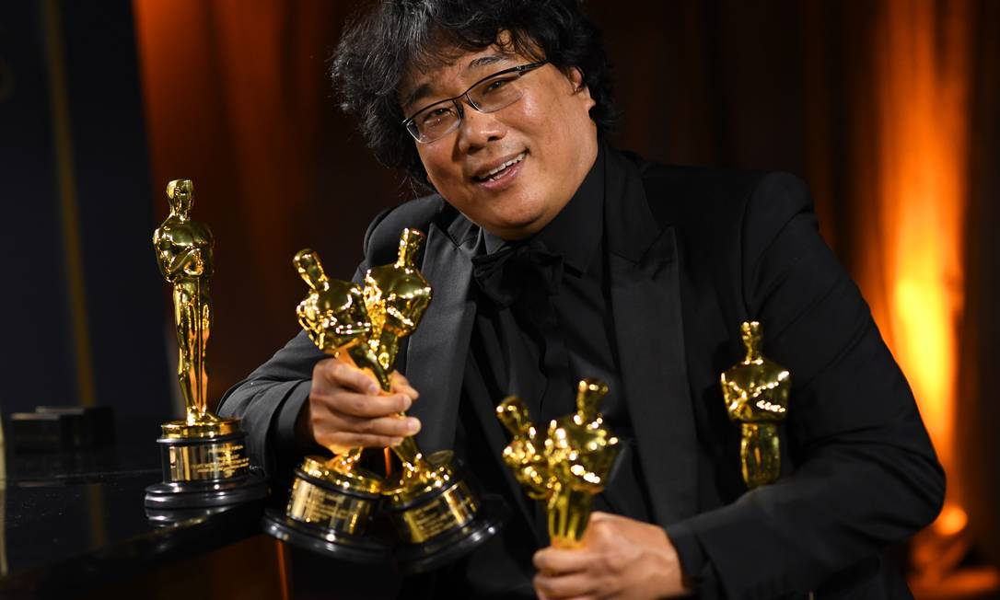
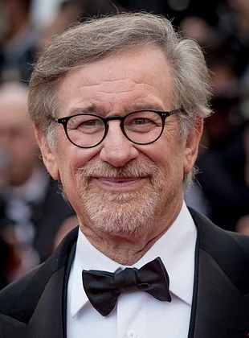
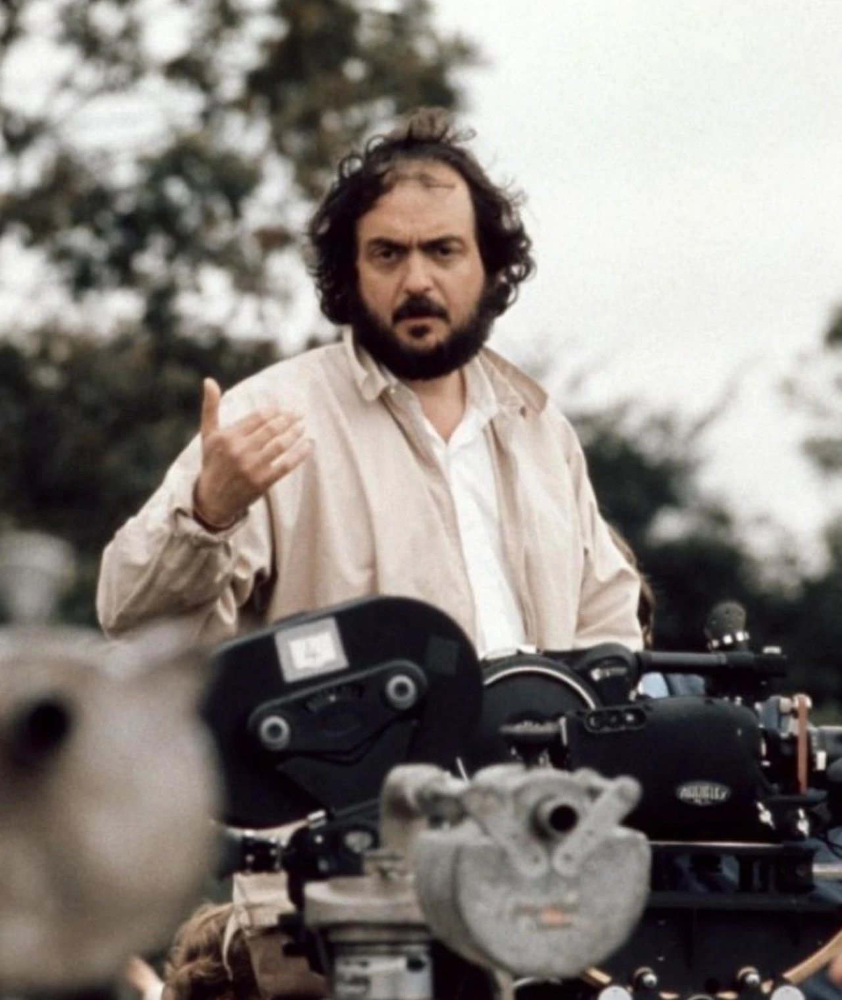

Biografia: Diretor e roteirista britânico nascido em 1970. Iniciou sua carreira com filmes independentes e estourou em Hollywood reinventando a trilogia do Batman. É mestre em brincar com o tempo e a física, preferindo efeitos práticos ao CGI.
Quentin Tarantino
Biografia: Nascido em 1963, o cineasta americano trabalhou em uma locadora de vídeos antes de revolucionar o cinema nos anos 90 com Pulp Fiction. Autodidata, suas obras são marcadas por diálogos afiados, referências à cultura pop e muita violência estilizada.

Bong Joon-ho
Biografia: Nascido na Coreia do Sul em 1969, formou-se em sociologia antes de se dedicar ao cinema. Fez história em 2020 ao ser o primeiro diretor de um filme em língua não-inglesa (Parasita) a vencer o Oscar de Melhor Filme, misturando humor ácido e forte crítica social.

Steven Spielberg
Biografia: Um dos fundadores da "Nova Hollywood", o americano nascido em 1946 é o diretor de maior bilheteria da história. Ele praticamente inventou o conceito de "blockbuster de verão" com Tubarão e equilibra perfeitamente o cinema comercial de aventura com dramas históricos profundos.
Martin Scorsese
Biografia: Nascido em Nova York em 1942, o cineasta ítalo-americano é um dos pilares do cinema moderno. Com mais de 50 anos de carreira, é amplamente aclamado por retratar a culpa católica, a criminalidade urbana, a máfia e a identidade americana com montagens frenéticas.

Stanley Kubrick
Biografia: Fotógrafo de origem que se tornou um dos diretores mais influentes de todos os tempos (1928–1999). Conhecido por seu perfeccionismo obsessivo, isolamento e simetria visual, Kubrick transitou por quase todos os gêneros cinematográficos, deixando obras-primas em cada um deles.